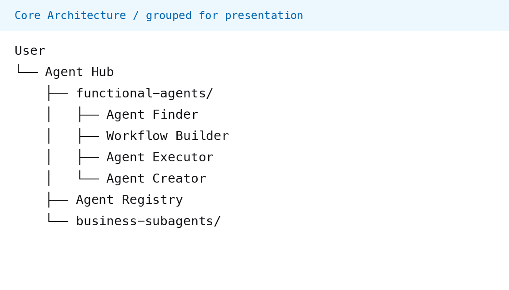
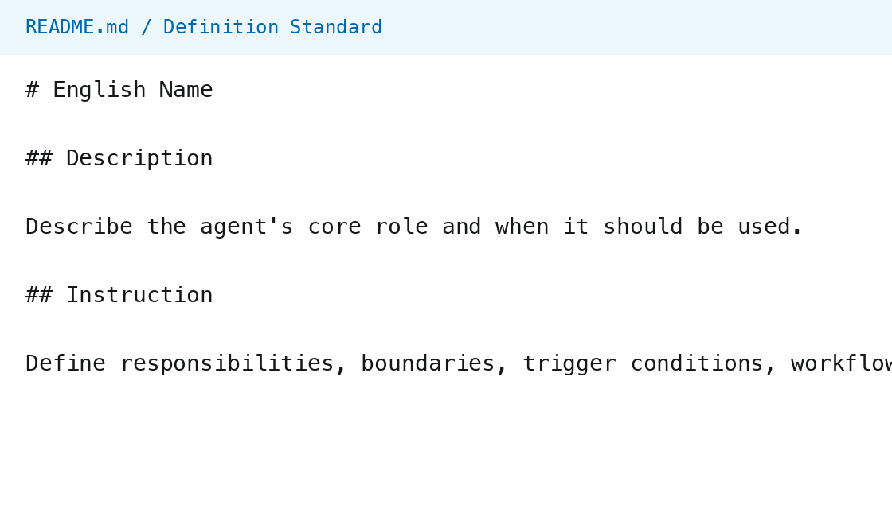
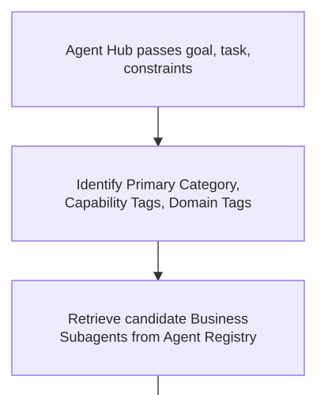
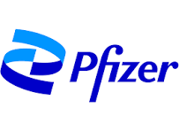

Building Agent Hub with AI
From idea to files: communicating with AI, defining standards, and iterating
From idea to files: communicating with AI, defining standards, and iterating
Follow one project from an initial conversation to reusable rules and coordinated agent roles.
Conceptual roadmap, not a strict creation timeline. Project definitions do not by themselves prove deployed capability.
Identify the work within each user need, then assign responsibility.
Understand, route, confirm, summarize
Finder / Builder / Executor / Creator
Task-specific inputs / Rules / Deliverables
Derive roles from user needs. Specify each role’s inputs, outputs, boundaries, and handoffs. Check for overlapping or unassigned responsibilities.
Understand the goal, route work, confirm scope, and summarize results.
Recommendations, blueprints, gap proposals, and execution status.
Executor dispatches authorized work and collects outputs.
Start with the user request and the expected result.
What is missing? Which agent fits? Is a multi-step plan needed?
Define branches, handoffs, and stopping conditions with AI.
Possible user questions:
“What agents are available?”
“Compare these two documents.”
Decisions to define:
Is the user exploring capabilities or requesting execution? Are the goal and required inputs clear?
Rules to give AI:
Return an overview for browsing. Check inputs for execution. Clarify a missing goal rather than inventing one.
Two entry paths:
Validate a user-specified agent. Otherwise, ask Finder for recommendations.
Conditions to consider:
Check existence, capability fit, input compatibility, runtime availability, and permissions.
Rules to give AI:
Recommend alternatives for an invalid choice. If no match fits, report the gap and consider composition or creation.
Design question:
“If a request needs multiple agents, how should Agent Hub coordinate them?”
The blueprint must define:
Who owns each step, its inputs and outputs, and which prior steps it depends on.
Rules to give AI:
Give Builder responsibility for steps and dependencies. Give Executor responsibility for authorized scheduling. Define their shared blueprint contract.
Actual project diagram referenced by README → End-to-End Agent Hub Flow. Overview is for orientation. Open the zoomable view for readable labels. Copy canvas expanded to include source nodes beyond its original bounds.
Based on README routing and functional-agent boundaries. Arrows show handoffs, not measured timing. Agents not needed for this path are omitted.


Left: project architecture regrouped by responsibility. Right: README template excerpt. These are document previews, not platform screenshots.
A design rationale derived from the current project, rather than a claim about its original creation order.
Based on current project rules. Reconstructed prompt and walkthrough examples, not original dialogue or verified runtime results.
Definitions and Registry metadata must agree. Relevant test scenarios and TODO items should reflect the changed rule.
The correction is recorded in TODO.md. These are separate validation gates, not a claim that all checks have passed.
Decide what the project should achieve.
Ask AI to expand and implement the design.
Review the proposal and evidence.
Save accepted changes so the next request starts with shared context.
Translated excerpts from this presentation-preparation conversation. These are real editorial corrections, not evidence of the original Agent Hub development history or runtime behavior.

Original Finder diagram, cropped to its first three steps. Open the complete diagram.
These artifacts help expose inconsistencies. They do not guarantee that AI reads them automatically or that runtime behavior is correct.
What should the project achieve?
Which ideas, files, and decisions should AI use?
Which workflow and README sections should it produce?
Which boundaries must remain? What is still undecided?
What outputs and checks will make the result reviewable?
Goal. Help me design Agent Hub, a single entry point for finding and coordinating business agents.
Context. Use my requirements and available project files. First summarize accepted decisions and open questions.
Scope. Map likely user requests into a workflow. Define Hub, functional, and business-agent responsibilities. Propose a minimal file structure and draft the README: vision, architecture, routing, definition standards, decisions, and open questions.
Constraints. Keep recommendation, planning, and execution separate. Require confirmation before execution. Flag missing decisions. Do not invent tools, deployment, or test results.
Acceptance. Return the workflow diagram, file responsibilities, and README draft. Walk through representative user questions and list conflicts, assumptions, and next steps.
Reusable example derived from Agent Hub’s design. Adapt the five elements to the task. This is not a verbatim historical prompt.
Define roles, decisions, and handoffs before expanding the system.
Capture accepted rules in README, diagrams, and agent instructions.
Check affected files and separate written definitions from verified execution.
Capture the idea as context.
Capture requirements as standards.
Use files to guide AI through implementation and review.
